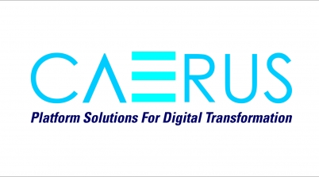

I have always been an above average student in my academics.I also used to take part in co-curricular activities, well not
that much.AS people say "every day is a learning",each stage of life taught me a new lesson. I have reperesented my acedamic details
in the below tabular form.

I got placed after my B-tech in a company name Caerus Infosystems, which is a Bengaluru based start-up.I started my career as
a manual tester.As it was a start-up we got to learn so much.We started from the scratch.I also worked on MIT- app inventor a tool
for developing websites.I got to be a part of a project named Eazycom, which is an app simlar to any online grocery app.
.jfif)
Later, I shifted to Caerus Skillmatic India Pvt Ltd with a tag line "skill-up,scale-up" , is a sister compant of Caerus Infosystems.Skillmatic developed an
online learning platform, just like Byjus.It connect various people at one place.Here I happened to write user
stories,test cases,test scenarios and also did bug tracking.This was very interesting as I used many ways to track the defects.
But I always wanted to be a part of development team, So I joined MSIT to dive deep and learn more techinal skills.